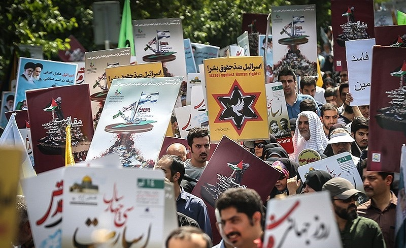
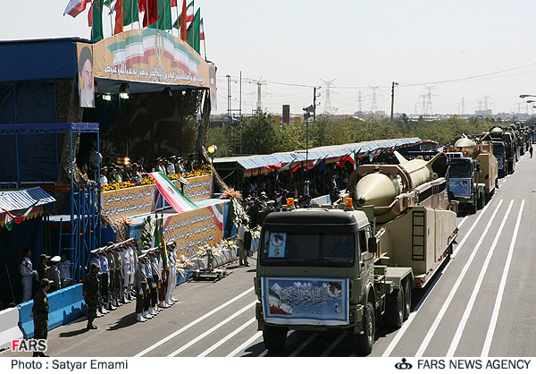
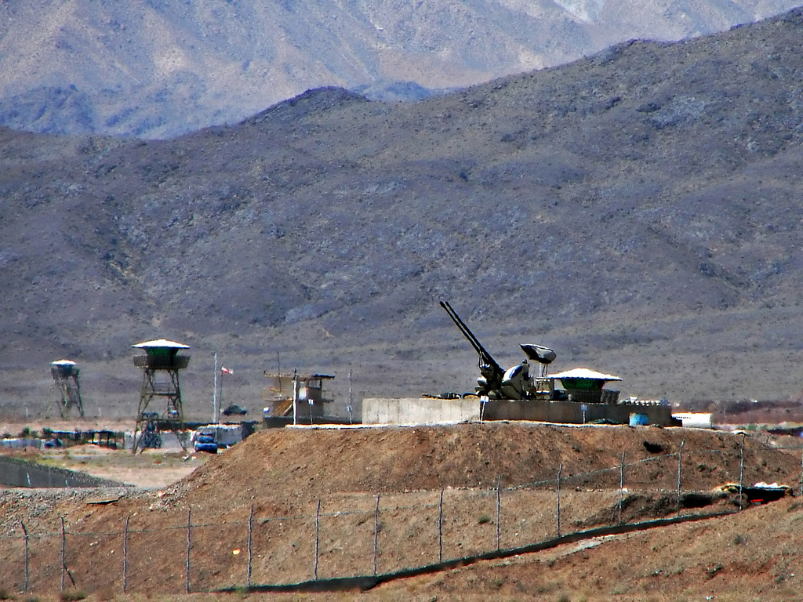
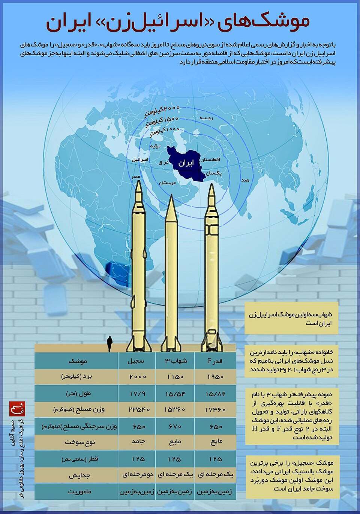
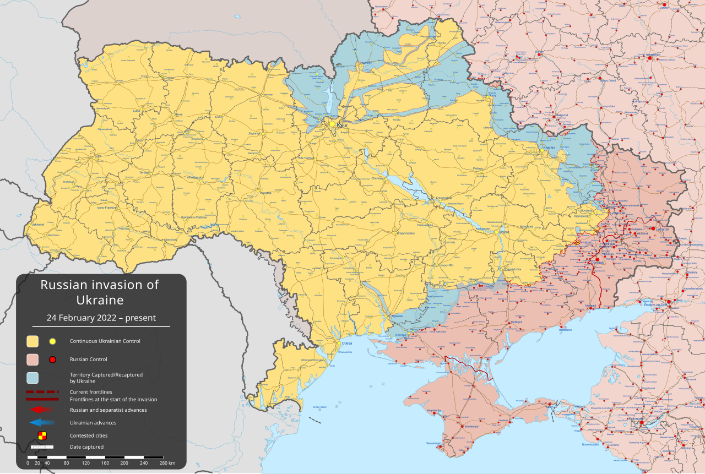
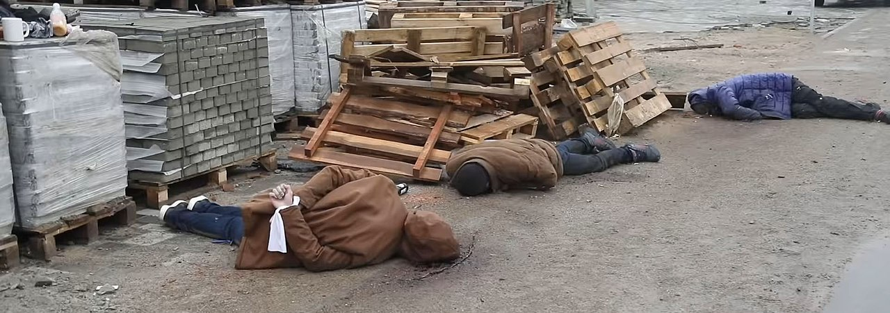
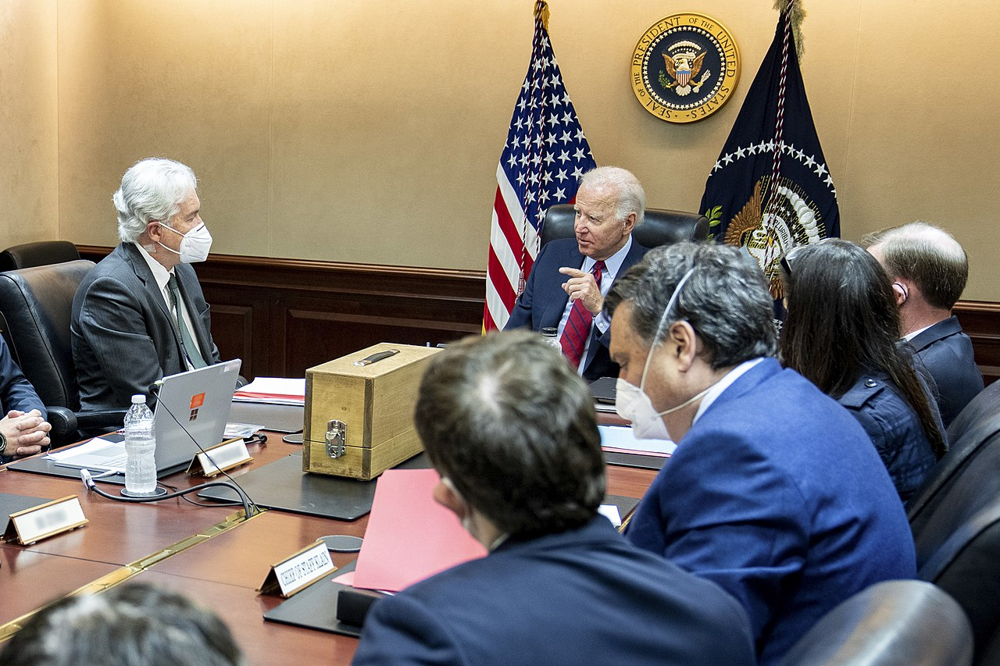
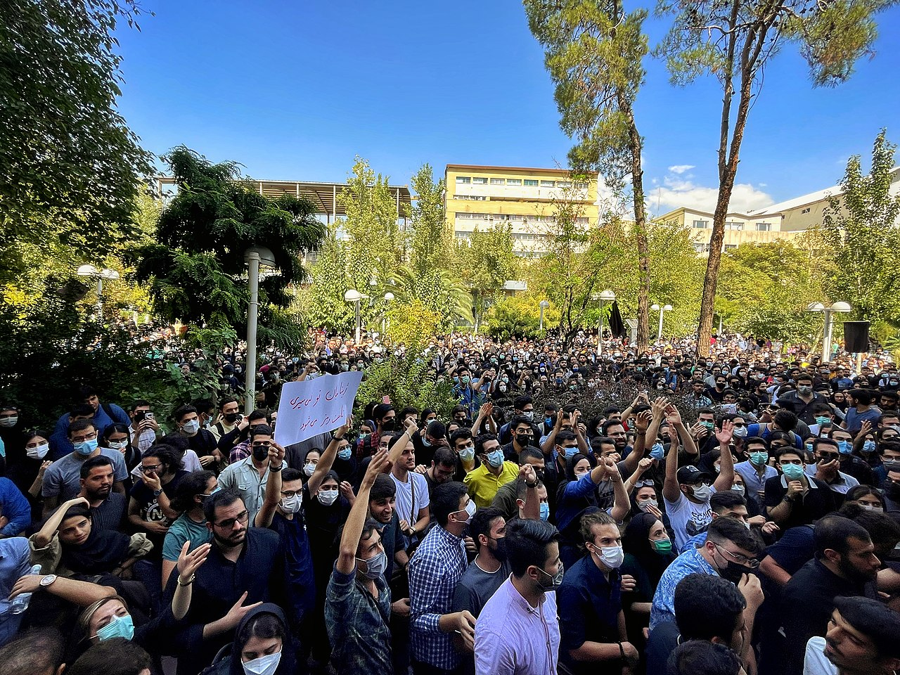
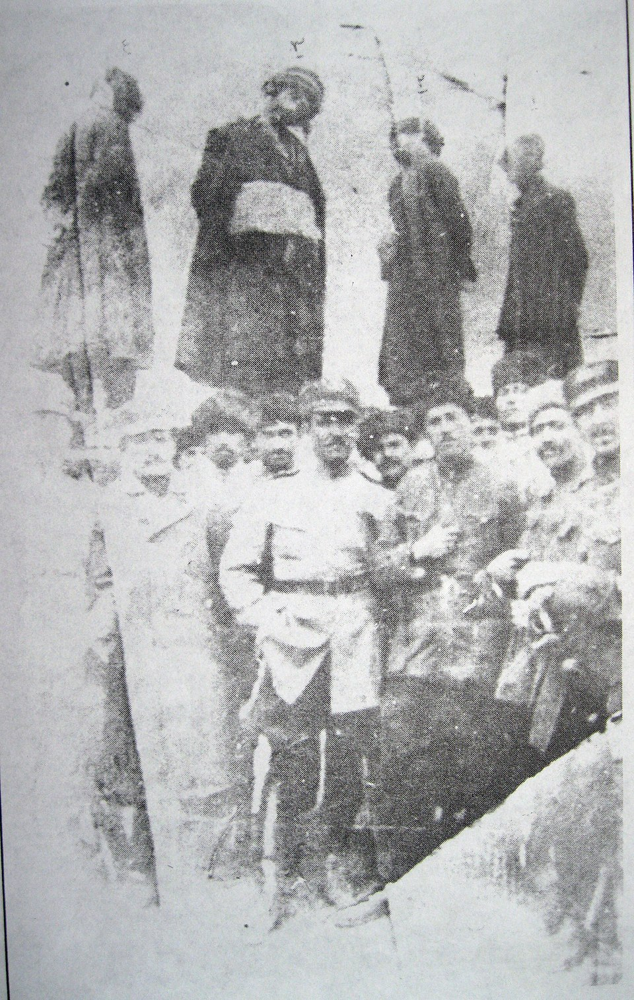

Почему «им можно, а нам нельзя» — аргумент, который не работает
«Америке можно, а России нельзя. Двойные стандарты. Вот вся ваша демократия.» — этот вой стоит в комментариях у каждого, кто пишет о войне. Запатриоты корчатся в ломке: как же так, Израиль и Америка бомбят Иран — и ничего, а Россия вошла в Украину — и сразу агрессор?
Ниже — разбор по пунктам, с фактами и источниками.

Пункт первый. Кто кому угрожал уничтожением
Иран на протяжении нескольких десятилетий, с момента прихода к власти исламских фанатиков, открыто и последовательно заявлял: Израиль — это «сионистское образование на землях ислама, которое не имеет права на существование». Не «верните нам кусок территории», не «отдайте наш город» — а полное уничтожение. Чтобы не было. Никогда.
Это не интерпретация — это задокументированная позиция на высшем государственном уровне:
— Верховный лидер Хаменеи неоднократно называл Израиль «злокачественной раковой опухолью, которая должна быть удалена и уничтожена». В августе 2012 года и Хаменеи, и президент Ахмадинежад выступили с заявлениями об уничтожении Израиля на митинге «Дня Кудс». Генсек ООН Пан Ги Мун и глава дипломатии ЕС Кэтрин Эштон официально осудили эти заявления (Wikipedia, август 2012).
— Президент Ахмадинежад, октябрь 2005 года, конференция «Мир без сионизма»: «Этот режим, оккупирующий Иерусалим, должен исчезнуть со страницы времён» — фраза, которую собственное иранское агентство ISNA перевело на английский как «Israel must be wiped off the map» (Wikipedia, 26 октября 2005). Совет Безопасности ООН выпустил заявление, Сенат США единогласно принял резолюцию S.RES.337, осуждающую эти слова.
— Главнокомандующий КСИР генерал-майор Хоссейн Салами, сентябрь 2019: «Этот зловещий режим должен быть стёрт с карты мира, и это больше не мечта — это достижимая цель» (VOA News, сентябрь 2019).
— На иранских баллистических ракетах во время испытаний писали на иврите: «Израиль должен быть стёрт с лица земли» (AP, AFP, фото с испытаний Shahab-3, март 2016).
— С 1979 года иранское правительство ежегодно организует и финансирует «День Кудс» — государственные массовые митинги, где стандартный лозунг «Смерть Израилю» скандируется при участии президента, военного командования и высшего духовенства.
Это принципиально отличается даже от гитлеровских претензий. Гитлер требовал Данциг, Судеты, кусок Чехословакии. Даже к Советскому Союзу в речи 22 июня 1941 года никто не говорил, что СССР — «неправильное образование, которое должно исчезнуть». В плане «Барбаросса» было сказано: дойдём до линии Архангельск — Астрахань, а дальше нас не колышет. Территориальные претензии, пусть чудовищные, — но не тотальное уничтожение.
А «уничтожить» — это не абстракция и не пафос речи. 7 октября 2023 года людям, живущим в Израиле, показали, как это выглядит на практике. И так будет с каждым, если Иран сделает то, что обещает на каждом своём съезде.
Теперь вопрос: говорила ли Украина когда-нибудь что-то подобное о России? Хотя бы устами самого маргинального политического деятеля? Заявляла ли Украина, что Российская Федерация — «некое неправильное образование, которое надо стереть с лица земли»? Никогда. Ни разу. Ни в каком формате. Более того — в 1994 году Украина добровольно отдала третий в мире ядерный арсенал (около 1700 стратегических боеголовок — больше, чем у Британии, Франции и Китая вместе взятых) в обмен на обещания безопасности, зафиксированные в Будапештском меморандуме (документ ООН A/49/765). Подписанты — Россия, США и Великобритания. Россия — подписант — нарушила каждый пункт этого документа.

Пункт второй. Реальная военная угроза
Какую военную угрозу представляла Украина для России по состоянию на 24 февраля 2022 года?
Цифры (по данным SIPRI и IISS Military Balance 2022): военный бюджет Украины — $5,9 млрд, России — $65,9 млрд (в 11 раз больше). Активный персонал: 200 000 против 900 000. Боевые самолёты: ~125 против ~1500. Танки: ~850 против ~3400. Ядерные боеголовки: 0 против ~6255 (крупнейший арсенал в мире).
Украина не была членом НАТО и не имела гарантий коллективной обороны. Никакого оружия дальнего действия не было — ни «Томагавков», ни Storm Shadow. Даже сейчас, на пятом году войны, всё, что может Украина с Россией — это, «комариные укусы». Ни одно разведывательное агентство, ни один военный аналитик в мире никогда не оценивал Украину как угрозу существованию России. Международный суд ООН 16 марта 2022 года потребовал от России немедленно прекратить военные действия, не найдя никаких доказательств «геноцида» русскоязычного населения, которым Россия обосновывала вторжение.
А что представляет собой угроза Ирана для Израиля?
Иран — государство площадью 1,65 млн км², по площади в пять раз превосходящее Германию и в три раза — Украину. Тысячи баллистических ракет — проверенный факт. Территория Израиля — 22 000 км². Это «страна одного ядерного взрыва»: после одного взрыва средней мощности эта территория станет непригодной для жизни.
Когда люди говорят тебе «мы хотим тебя убить» и при этом имеют возможности это сделать — им надо верить.

Пункт третий. Ядерная программа — движение терминатора
Настойчивость, с которой Иран двигался к созданию ядерного оружия, напоминает движение Терминатора.
Хронология задокументирована в десятках отчётов МАГАТЭ:
— 2002: иранская оппозиция в изгнании (NCRI) раскрывает существование двух тайных ядерных объектов — обогатительного завода в Натанзе и тяжеловодного реактора в Араке. Спутниковые снимки подтверждают.
— 2005: МАГАТЭ официально фиксирует нарушение Ираном обязательств по ДНЯО (отчёт GOV/2005/77).
— 2006–2010: Совет Безопасности ООН принимает пять резолюций с санкциями — 1696, 1737, 1747, 1803, 1929. Иран игнорирует все.
— 2009: Обама, Саркози и Браун публично разоблачают тайный подземный обогатительный завод в Фордо, построенный внутри горы.
— 2010: Иран начинает обогащение урана до 20%. Для реакторов нужно 0–5%. Обогащение до 20% — это уже 90% «работы», необходимой для достижения оружейного уровня.
— 2011: Знаковый отчёт МАГАТЭ GOV/2011/65 — «достоверные» доказательства того, что Иран вёл работы, «относящиеся к разработке ядерного взрывного устройства»: проектирование боеголовки, тесты детонаторов, интеграция с баллистической ракетой Shahab-3.
Ребята, у вас 10% мировых запасов нефти и 16% природного газа — вам не хватает энергетики? Мир предложил: пришлём готовое ядерное горючее для электростанций, просто напишите спецификацию. Нет, хотим своё.
В 2015 году подписывается «всеобъемлющее соглашение» (JCPOA) по формуле 5+1: пять ядерных держав (Россия, Китай, США, Франция, Великобритания) плюс Германия. Условия: Иран ограничивает обогащение до 3,67%, сокращает центрифуги до 5060, держит не более 300 кг низкообогащённого урана, допускает инспекции МАГАТЭ. Взамен — снятие всех ядерных санкций. Иран обещал выполнять.
Украинцы услышат тут что-то знакомое, только вывернутое мехом наружу — Будапештский меморандум. Украина физически отдала ядерное оружие в обмен на обещания. Здесь то же самое наоборот: санкции сняли немедленно, деньги потекли — в обмен на обещания Ирана.
Чем кончились обещания? Иран нарушил каждый пункт соглашения — всё это зафиксировано МАГАТЭ:
— 2019: превышен лимит запасов (300 кг), обогащение поднято выше 3,67% (отчёты GOV/INF/2019/8, GOV/INF/2019/9). Возобновлено обогащение на запрещённом объекте в Фордо (GOV/2019/55).
— 2021: обогащение поднято до 20%, затем до 60%. Шестьдесят процентов — ни для какого мирного использования невозможны. До оружейного уровня (90%) остаётся минимум дополнительных усилий.
— Февраль 2023: инспекторы МАГАТЭ обнаруживают в Фордо частицы урана, обогащённого до 83,7% (GOV/INF/2023/1). Иран списывает на «непреднамеренные колебания».
— 2022: Иран снимает 27 камер наблюдения МАГАТЭ с ядерных объектов (GOV/2022/26).
К концу 2024 года (по данным отчётов GOV/2024/61-62) Иран накопил более 6600 кг обогащённого урана (лимит JCPOA — 300 кг), из них ~182 кг обогащены до 60%. Госсекретарь США Блинкен в январе 2024 заявил, что «время прорыва» Ирана — от одной до двух недель.
Потрясающая операция израильской разведки — ночь 31 января 2018 года: менее 24 агентов Моссада проникли на склад в промзоне в 23 км от Тегерана, вскрыли 6 из 32 сейфов, вывезли 50 000 бумажных документов и 55 000 страниц на 183 дисках — весь архив иранской программы создания ядерного оружия (проект AMAD). Подлинность подтверждена МАГАТЭ, Times of Israel и разведками США и Великобритании. Из документов следовало: полным ходом шла работа над оружейным ураном и конструкцией боеголовки.
И финальный штрих. По свидетельствам участников, на переговорах в Швейцарии в феврале 2025 года иранцы начали с заявления: «Имейте в виду, у нас уже на 11 бомб есть. Да, мы вас обманули со всеми вашими санкциями и вашим МАГАТЭ».
В этой ситуации Израиль был поставлен перед выбором: сыграть в «еврейскую рулетку» — подождать, пока по нему нанесут ядерный удар, а потом разозлиться и провести ответную акцию? Евреи решили не играть в рулетку.

Пункт четвёртый. «Ось сопротивления» — прокси-армии вокруг Израиля
Иранские фанатики не ограничились ядерной программой. Они создали целую «ось сопротивления» — сеть прокси-армий, окружающих Израиль. Это не конспирология: главнокомандующий КСИР Хоссейн Салами публично заявил — «Мы вооружили Хезболлу, мы этим гордимся» (Fars News Agency, сентябрь 2019).
Хезболла в Ливане. Создана Ираном в 1982 году — при основании Иран направил в Ливан около 1500 бойцов Революционной гвардии (Council on Foreign Relations). Финансирование — от $700 млн до $1 млрд в год (оценка Госдепа США). К 2023 году арсенал Хезболлы достиг 130 000–150 000 ракет и ракетных снарядов (оценки ЦАХАЛ, Wikipedia, IISS) — это самое тяжеловооружённое негосударственное формирование в мире. Хезболла повела себя как кукушонок в чужом гнезде — фактически стала главной военной силой внутри Ливана, превосходя ливанскую армию в тяжёлом вооружении. Резолюция СБ ООН 1559 (2004) требовала разоружения всех ливанских милиций — не выполнена. Резолюция 1701 (2006) запретила вооружённые формирования к югу от Литани — Хезболла только расширила инфраструктуру. В мае 2008 года Хезболла вооружённым путём захватила Западный Бейрут. После 7 октября 2023 года Хезболла выпустила более 8000 ракет по северу Израиля, вынудив эвакуировать ~60 000 мирных жителей.
Хуситы в Йемене. Комиссия экспертов ООН по Йемену (отчёты S/2018/68, S/2020/326) многократно документировала иранское происхождение оружия хуситов: баллистические ракеты типа Burkan-2H (копия иранской Qiam-1), крылатые ракеты Quds-1/2/3, ударные дроны Shahed-136 (те самые, что Россия использует против Украины). ВМС США перехватили множество грузов с иранским оружием. Дальность — 2000 км от Йемена до Израиля. Долетает. В июле 2024 года хуситский дрон поразил Тель-Авив. С ноября 2023 года хуситы атаковали более 100 торговых судов в Красном море — утопили два, убили трёх моряков, вынудили крупнейшие судоходные компании перенаправить суда вокруг мыса Доброй Надежды (+10–14 дней пути). 12–15% мировой торговли проходит через этот маршрут.
Это десятилетия реальности. Не «возможная угроза», а то, что происходило каждый день.
Найдите отличия
Теперь — конкретные, наблюдаемые различия между двумя «специальными военными операциями».

Отличие первое: территориальные захваты.
Ни о каком территориальном завоевании со стороны Израиля и США речи не идёт. Иран не потеряет ни одного миллиметра территории.
Россия под лозунгами «на нас готовы напасть» аннексировала около 18–20% территории Украины: Крым в 2014 году (~27 000 км²), затем в сентябре 2022 года объявила об аннексии Донецкой, Луганской, Запорожской и Херсонской областей — даже не контролируя их полностью. Генеральная Ассамблея ООН в резолюции ES-11/4 (143 голоса «за», 5 «против») осудила эту аннексию и объявила её «не имеющей юридической силы». Это крупнейший насильственный захват территории в Европе со времён Второй мировой войны.
Причём Россия делает это не впервые. Паттерн:
— Финляндия, 1939–1940: оттяпали ~41 000 км² (~9% территории), 420 000 финнов стали беженцами. СССР исключён из Лиги Наций.
— Румыния, 1940: по тайному протоколу пакта Молотова-Риббентропа отняли Бессарабию и Северную Буковину (~51 000 км²).
— Прибалтика, 1940: оккупация и аннексия Литвы, Латвии, Эстонии (~175 000 км², ~6 млн человек). США и большинство западных стран никогда не признавали законность этой аннексии.
— Грузия, 2008: вторжение и фактическая оккупация Южной Осетии и Абхазии (~20% территории Грузии).
Каждый раз — сфабрикованный предлог, военное принуждение, аннексия или создание марионеточных образований, постоянная оккупация.
Отличие второе: отношение к гражданскому населению.

Россия — документированные факты:
— Буча (обнаружено 31 марта 2022): более 450 тел мирных жителей, многие — со связанными руками и огнестрельными ранениями в затылок. Спутниковые снимки Maxar Technologies от 9–11 марта зафиксировали тела на улицах ещё при российской оккупации — что опровергло версию об «инсценировке». Human Rights Watch задокументировала факты внесудебных казней. Следствие — приостановление членства России в Совете ООН по правам человека (93 голоса «за»).
— Изюм (обнаружено сентябрь 2022): эксгумировано 447 тел, подавляющее большинство — гражданские. У многих — следы пыток: переломы костей, следы верёвок, колотые раны, связанные руки.
— Мариупольский драмтеатр (16 марта 2022): российский авиаудар по театру, использовавшемуся как укрытие для мирных жителей. На площадке перед зданием гигантскими буквами было выведено слово «ДЕТИ», видное со спутника. По расследованию AP — около 600 погибших.
— Краматорский вокзал (8 апреля 2022): удар ракетой «Точка-У» по вокзалу, переполненному эвакуируемыми. 63 убитых, более 150 раненых. На ракете надпись «за детей».
— 17 марта 2023 года Международный уголовный суд (МУС) выдал ордер на арест Путина — за незаконную депортацию украинских детей. Первый ордер МУС на действующего главу государства — постоянного члена Совбеза ООН.
Никакого уголовного преследования виновных со стороны РФ. Россия отрицает всё, не проводит расследований, блокирует независимые СМИ, криминализирует слово «война».

Для сравнения — Абу-Грейб. Тюрьма в Ираке, 2003 год. Американские военные издевались над заключёнными — раздевали, унижали, запугивали собаками. Позор, покрывший американскую армию на десятилетия. Что произошло дальше:
— О нарушениях сообщил свой же солдат — специалист Джозеф Дарби, передавший фото в Армейское уголовное расследование (январь 2004).
— 11 военнослужащих осуждены. Максимальный срок — 10 лет (специалист Чарльз Грейнер). Ещё семеро получили от 6 месяцев до 8 лет.
— Бригадный генерал Дженис Карпински понижена в звании до полковника.
— Доклад генерала Тагубы (февраль 2004), доклад независимой комиссии Шлезингера (август 2004), доклад Фэя-Джонса — множественные расследования.
— Министр обороны Рамсфелд давал показания перед Сенатом, публично извинился, дважды предлагал отставку.
— Фотографии показали миру журналисты CBS (60 Minutes II, 28 апреля 2004) и Сеймур Херш (The New Yorker, 30 апреля 2004).
— В 2024 году — через 20 лет — федеральный суд присяжных признал виновной компанию-подрядчика CACI International (дело Al Shimari v. CACI).
Вот разница: одна сторона расследует, судит, сажает и извиняется. Другая — отрицает и блокирует.
Что касается самих ударов — Америка потратила десятилетия и миллиарды на разработку высокоточного оружия именно для минимизации жертв среди мирного населения. Ракета R9X «Летающая Гинзу» — без боевой части, с шестью вращающимися лезвиями — была создана специально для ликвидации целей без ущерба окружающим. Ею 31 июля 2022 года уничтожен лидер «Аль-Каиды» Айман аз-Завахири в Кабуле — без единой дополнительной жертвы.
ЦАХАЛ перед ударами по Бейруту рассылал по мобильным телефонам предупреждения: «Через полчаса мы бомбим этот квартал. Мирные жители, покиньте территорию.» Практика «стука по крыше» (hakesh bagag) — сброс маломощного неразрушающего боеприпаса на крышу здания за несколько минут до удара — задокументирована в операциях 2012, 2014 и 2023 годов. Да, это снижает эффективность — уходят не только гражданские, но и те, ради кого всё делается. Тем не менее — идут на это.
Отличие третье: отношение собственного народа к режиму.

Иран — это режим, которому противостоит собственное население. Десятилетиями. Документированно:
— «Зелёное движение», 2009: миллионы вышли на улицы после фальсификации выборов. Минимум 72 убитых, более 4000 арестованных. Нида Ага-Солтан, застреленная на камеру, стала мировым символом.
— Протесты «День», 2017–2018: волнения в более чем 140 городах во всех провинциях. Лозунги: «Смерть диктатору», «Мы не хотим Исламскую Республику». 25 убитых, ~5000 арестованных. 90% арестованных — моложе 25 лет (The Guardian, Amnesty International).
— «Кровавый ноябрь», 2019 — самое жестокое подавление в истории Исламской Республики. Повод: повышение цен на бензин на 50–200%. Протесты в 29 провинциях, 104 городах. Специальное расследование Reuters/Wikipedia установило: убито около 1500 человек. Силовики стреляли с крыш и вертолётов, из пулемётов — в упор по безоружным. Тела вывозили, семьям убитых угрожали. Полный блэкаут интернета на 6 дней — первый в истории тотальный шатдаун целой страны (NetBlocks).
— Махса Амини, 2022–2023: 22-летняя курдская девушка умерла в полиции после задержания за «неправильный» хиджаб. Протесты во всех 31 провинции, 134 городах, 132 университетах. По данным Iran Human Rights (Норвегия) — минимум 551 убит, включая 68 детей. Более 19 000 арестованных (HRANA). Лозунги: «Женщина, жизнь, свобода», «Смерть Хаменеи». 2 февраля 2024 года Миссия ООН по установлению фактов квалифицировала действия режима как преступления против человечности.
— Протесты декабря 2025 — января 2026: волнения, начавшиеся на Большом базаре Тегерана, охватили всю страну. 8 января 2026 года режим применил боевое оружие военного класса. По данным Совета национальной безопасности Ирана — убиты 3117 человек; спецдокладчик ООН по Ирану Май Сато назвал цифру не менее 5000 убитых; Iran Human Rights верифицировал 3428 погибших, отметив, что реальное число «значительно выше». Арестовано от 40 000 до 50 000 человек. Минимум 26 протестующих приговорены к смертной казни, в том числе 19-летний Мохаммад Амин Биглари. Среди обвиняемых — подростки: 17-летние Матин Мохаммади и Эрфан Амири, которым грозит казнь. Государственное ТВ транслирует «признания», полученные под пытками. Семьи убитых принуждают подписывать ложные заявления, обвиняющие «террористов».

Машина казней
Отдельная тема — практика смертных казней в Иране. Масштабы не укладываются в голове.
Статистика по данным Iran Human Rights (Норвегия) и Amnesty International:
— 2022 год: ~553 казней
— 2023 год: 853+ казней
— 2024 год: ~901+ казней
— 2025 год: более 1500 казней — больше, чем в любой другой год с конца 1980-х. В среднем — более четырёх повешенных в день.
— Январь–февраль 2026: 141 верифицированная казнь + 531 неподтверждённый отчёт. Власти официально объявили лишь о 2,8% из них.
Все казни в Иране осуществляются через повешение. Исламский уголовный кодекс также сохраняет побивание камнями (за «прелюбодеяние»), распятие, ослепление и ампутацию конечностей.
Казни протестующих. По протестам Махса Амини казнены минимум 10 человек. Первый — Мохсен Шекари, повешен 8 декабря 2022 года за «вражду с Богом» (мохаребе). Маджидреза Рахнавард — публично повешен на строительном кране в Мешхеде 12 декабря 2022 года. Мохаммад Мехди Карами — чемпион по каратэ — повешен 7 января 2023 года. Реза Расаи — курд, казнён тайно, без уведомления семьи и адвоката, 6 августа 2024 года; в заключении подвергался пыткам, включая сексуальное насилие (IHRNGO).
Казни женщин. Только за наркотические преступления с 2010 по 2025 год казнены 121 женщина. Правозащитницы Шарифе Мохаммади (приговорена к смерти в июне 2024) и курдская активистка Пахшан Азизи (приговорена в июле 2024) ожидают казни за правозащитную деятельность (Amnesty International). Минимальный возраст уголовной ответственности для девочек — 9 лет.
Казни несовершеннолетних. Иран продолжает казнить людей за преступления, совершённые в возрасте до 18 лет — в прямом нарушении Конвенции о правах ребёнка, которую Иран ратифицировал. По данным IHRNGO, среди задержанных в 2026 году — подростки 16–18 лет с тяжёлыми ранениями: Куруш Фатеми (16 лет) и Омид Фарахани (16 лет) — оба парализованы после огнестрельных ранений в спину; Хоссейн Ахмадзаде — потерял оба глаза, череп заполнен дробью.
Публичные повешения — включая повешения на строительных кранах — продолжаются. Режим объявляет лишь о 10–30% казней; остальные совершаются тайно.
Для сравнения — Израиль. За всю историю государства Израиль (с 1948 года) смертная казнь была приведена в исполнение дважды. Первый раз — в 1948 году, во время войны за независимость, по приговору полевого суда (Меир Тобянский, офицер, обвинённый в измене — посмертно оправдан в 1949 году; дело стало национальным позором). Второй раз — Адольф Эйхман, архитектор Холокоста, в 1962 году. Больше — ни разу. Ни за одну из войн — 1956, 1967, 1973, 1982, 2006 — ни за одну террористическую атаку. Даже после 7 октября 2023 года предложения о расширении смертной казни были отвергнуты: главы Шин-Бет, ЦАХАЛа и Моссада выступили против. В 2007 году Израиль проголосовал за мораторий ООН на смертную казнь.
Иран казнит больше людей за одну неделю, чем Израиль — за всю свою историю.
— Кислотные атаки, Исфахан, 2014: серия нападений с кислотой на женщин за отсутствие хиджаба. Режим не расследовал — вместо этого арестовал журналистов, которые об этом писали.
Данные опросов: по исследованию GAMAAN (Нидерланды, ноябрь 2022) — почти 75% иранцев выступают против обязательного хиджаба, из них 84% предпочитают светское государство теократии.
Студенты Тегеранского университета демонстративно отказывались наступать на американские и израильские флаги, нарисованные на полу — отвергая базовую идеологию режима. Лозунг, повторявшийся на протестах всех волн: «Ни Газа, ни Ливан — моя жизнь только для Ирана» — прямой протест против прокси-войн режима.
Более бесчеловечного государства, даже по сравнению с Советским Союзом, найти трудно. Режим, чьи силовые структуры (КСИР) контролируют более 60% экономики, не платят налогов и не проходят аудита. Режим, личная бизнес-империя верховного лидера которого — Setad — оценивается Reuters в $95 млрд. Режим, готовый полностью уничтожить собственный народ ради религиозной догмы.
Итог
Для тех, кому после всех объяснений всё ещё непонятно — на кухонном языке.
Представьте: в вашем районе живёт сумасшедший. Не пьяный — реально сумасшедший. Он бегает с топором и кричит «Я зарублю!». Он напал на вас. Он избил вашего мужа. Пришёл полицейский и забрал у него топор. Его не убили, не расчленили. Просто он вас больше никогда не тронет.
Аятоллы — это реально чокнутые. Их проповеди провозглашают уничтожение западной цивилизации как «приход дьявола на землю». Это их цель. Это даже не Гитлер — тот хотя бы строил благо для своего общества, пусть плохо и косо. Эти готовы полностью уничтожить свой собственный народ ради религиозной догмы.
Сумасшедший с топором — ещё лучший вариант по сравнению с аятоллой с ядерной дубинкой.
Источники:
- МАГАТЭ — хронология ключевых событий
- Отчёты МАГАТЭ: GOV/2005/77, GOV/2011/65, GOV/INF/2019/8-9, GOV/2019/55, GOV/2021/28, GOV/INF/2023/1, GOV/2022/26, GOV/2024/61-62
- Резолюции СБ ООН: 1559, 1696, 1737, 1747, 1803, 1929, 1701, 2216, 2231
- Резолюции ГА ООН: A/RES/68/262, A/RES/ES-11/1, A/RES/ES-11/4
- МУС: ордер на арест Путина, 17.03.2023
- МС ООН: временные меры по делу «Украина против России», 16.03.2022
- Будапештский меморандум (документ ООН A/49/765)
- SIPRI Military Expenditure Database
- IISS Military Balance
- Human Rights Watch — Буча
- Amnesty International — Иран
- Iran Human Rights (Норвегия)
- HRANA — правозащитники в Иране
- GAMAAN — опросы общественного мнения
- Reuters — расследование «Кровавого ноября»
- Wikipedia — Setad (EIKO) ($95 млрд)
- Council on Foreign Relations — Хезболла
- CSIS — ракетный арсенал Хезболлы
- Комиссия экспертов ООН по Йемену: S/2018/68, S/2020/326
- Операция «Архив» Моссада (Times of Israel, Wikipedia)
- AP — расследование по Мариупольскому театру
- The New Yorker — Абу-Грейб (Сеймур Херш)
- Резолюция Сената США S.RES.337
- Смертная казнь в Израиле — Википедия
- Марк Солонин — видео-выступление (YouTube)